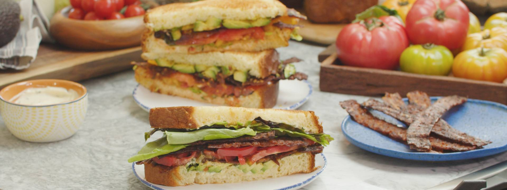

VEGAN SUMMER BLT WITH BASIL AIOLI
Ingredients
Crispy Bacon Strips:- 2 tablespoons Sriracha
- 3 tablespoons nutritional yeast, divided
- 1½ tablespoons granulated garlic
- ½ teaspoons cayenne
- 1½ tablespoons smoked paprika
- 2 teaspoons liquid smoke (optional)
- ¼ cup (60ml) pure maple syrup
- 3 tablespoons (44ml) soy sauce or tamari
- 4 tablespoons (56g) vegan butter, melted
- 3 tablespoons (44ml) water
- ½ teaspoon fresh cracked pepper
- 3 ounces (85g) extra-firm tofu, pressed overnight
- 9 sheets of square rice paper*
- Vegetable (or avocado) cooking spray
Summer Basil “Aioli”:
- ¼ cup (54g) of Vegan Egg Yolks*
- 1¼ cup (200ml) avocado or grapeseed ail
- 2 teaspoons dijon mustard
- 2 teaspoons garlic paste (about 2 cloves grated)
- 2 tablespoons chopped fresh basil
- 1 lemon for zesting and juicing
- Kosher salt and freshly cracked black pepper, to taste
For the Sandwiches:
- Loaf of pain de mie bread or brioche, for slicing
- 1 head of butter leaf lettuce, cleaned and leaves separated
- 2 vine-ripened heirloom tomatoes
- Avocado, pitted, peeled, and sliced
Method
- Preheat oven to 375˚F (190˚C) and prepare a baking sheet with a rack and parchment paper. Spray baking rack with cooking spray and set aside.
- Prepare marinade - whisking together sriracha, 2 tablespoons nutritional yeast, garlic powder, cayenne, smoked paprika, liquid smoke, maple syrup, tamari, melted butter, and water. Season mixture with pepper.
- Place pressed tofu in a bowl and using hands crumble tofu into pea-size pieces. Season with remaining nutritional yeast and 3 tablespoons of marinade. Set aside.
- Prepare bacon strips, using sharp kitchen shears, cut rice paper into 1½ inch-wide (4 cm) strips. Pour remaining marinade into a shallow baking dish and working with a few “bacon” strips at a time, dip rice paper into marinade. Flip to coat and once pliable remove and place on prepared baking sheet. Scatter with tofu to resemble the “fat” of the bacon strips. Top with another bacon strip, pressing with your fingers to fuse together into a strip. Re-dip in marinade as needed. Repeat with remaining strips.
- Bake bacon strips in oven for 10-12 minutes, flipping halfway through. Gently scrunch strips with your fingers to create curly bacon, continue to bake for another 10-12 minutes or until bacon is crispy and amber brown. Brush strips with more marinade as needed if they start to dry out too much.
- Meanwhile prepare basil aioli - placing “whisked yolks” in a blender (or food processor). With the motor running, slowly stream in oil* until yolks begin to thicken. Season with garlic, mustard, basil, lemon zest, a big squeeze of lemon juice, salt, and pepper.
- Slice bread into 1-inch (2½ cm) thick slices and toast in a toaster or in a pan with butter. Slice tomatoes into ¼inch (19mm) thick slices and season with salt and pepper.
- To build - slather toasted bread with aioli, butter lettuce, seasoned tomato, crispy bacon strips, and top with avocado slices. Serve alongside crunchy potato chips for the perfect summer lunch any time of day.
SPECIAL EQUIPMENT:
- Baking Sheet with a Rack
- Food Processor or Blender
RECIPE NOTES:
- Square rice paper may be substituted for traditional round spring roll wrappers, simply trim round edges to create rectangular bacon-like strips.
- Just Egg yolks are plant-based yolks - if unavailable substitute with ¼ cup aquafaba.
- When making aioli or any type of mayonnaise it’s important to start very slowly with the oil. With the help of a food processor or blender, used in this recipe, you really get some fool-proof help. Start slowly and once you see the yolks emulsifying or thickening with the oil you can quicken the flow of oil.
TIPS
- Make bacon ahead of time and keep in the refrigerator for up to a week. Bacon will get more crispy as it sits.